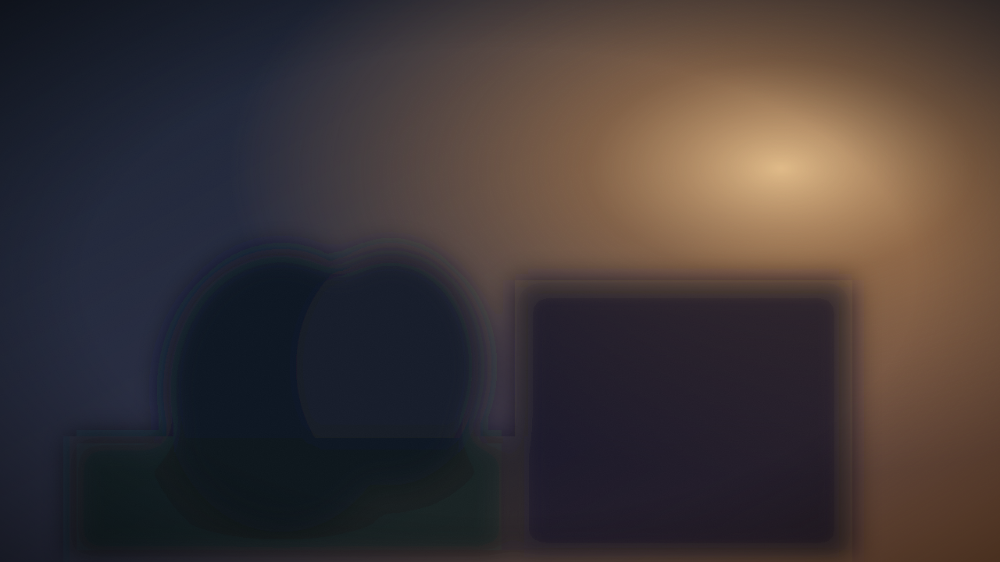

短剧_第3集_片段A.mp4
示意素材

DRAMA·TV
区域1 · AI 修复预览
区域1 · 台标
00:00:04:12
00:00:18:00
空格 播放 · ←/→ 逐帧 · V 对比 · B 打点 · C 清除标记 · ⌘/Ctrl+Enter 入队 · ⌘/Ctrl+Z 撤销
批量任务中心
并行调度 · 失败隔离 · 断点续传，全程可暂停 / 恢复 / 重试
2
队列中
1
处理中
5
已完成
1
失败
短剧批次_0819#B-20260819-03处理中
短剧_第7集_高光.mp4
口播素材_0819#B-20260819-04已暂停
竞品参考_清洗#B-20260818-11失败 1 条
达人素材_0818#B-20260818-09已完成
模板管理
参数预设一键应用到整批素材
短剧通用清洗
水印区域左上台标
修复模式AI 精细
清洗强度低
导出格式MP4 · 原分辨率
电商带货去台标
水印区域右下角标
修复模式快速
清洗强度关
导出格式MP4 · 1080p
千川素材降险
分镜重构35%
画质微扰25%
音频指纹开启
导出格式MOV · 原分辨率
处理历史
每次处理的参数与输出都留在这里，可一键再次处理
| 素材 | 时间 | 动作 | 参数快照 | 输出 | 结果 |
|---|
设置
默认行为与硬件资源策略
处理中间帧的临时缓存目录，建议使用本地高速磁盘
界面主题
当前跟随系统（可手动切换）
本工具仅用于处理你拥有或有使用权的视频，检测结果仅供参考。